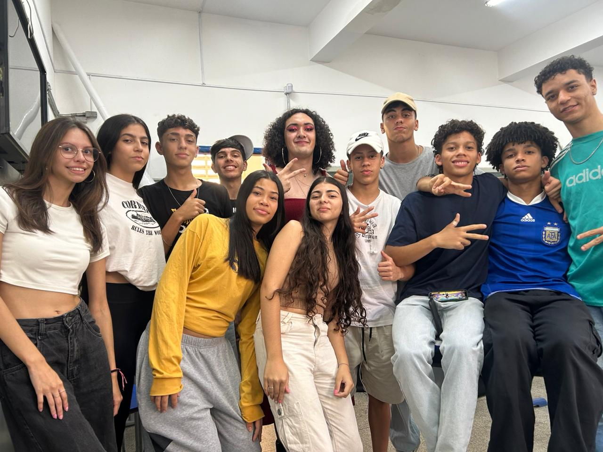

Nunca me pareció lo ideal ser el responsable de capacitar a otras personas, al menos no tan temprano. 19 años y una sala de clases. Yo tenía alumnos de 18. Me sentí como un objeto directo, pero incompleto, en busca de «la a personal» que me daría una identidad propia.
¿Elección? No, pasos omitidos. Pasante no fui, ya era el profesor en el tercer semestre de la facultad. Culpa del dinero o de la falta de él. Tal vez sea la ciudad que me cooptó o la familia que en otro lugar ficóquedó, las lenguas se cruzan como mis certezas.
las dos lenguas pelean por la misma frase
Me siento un esperpento de Valle-Inclán, sin saber si soy títere o titiritero. Una vez me llamaron de basura, pero fue un alumno en cientos. También fue apenas una alumna que tuve la experiencia de almorzar junto en el «bandejão» después que entró en la USP con mi ayuda.
Mi madre señala que cuando era un bebé decían que tenía manos de educador. Reprobé algunas veces debido a la falta de tiempo causada por el trabajo. Planté un angico cuando niño, mismo nombre de la ciudad donde Paulo Freire comenzó. Él aprendió con sus alumnos.
Los mismos compañeros docentes que me elogian, me aconsejan dejar la educación básica y dedicarme a la investigación académica. Una Guernica interior, disculpa la comparación. Viviendo un luto a los 22 por una juventud que no es mía, ayudando la juventud de otras personas.




¿Cómo se es profe cuando todavía te estás convirtiendo en quien vas a ser?